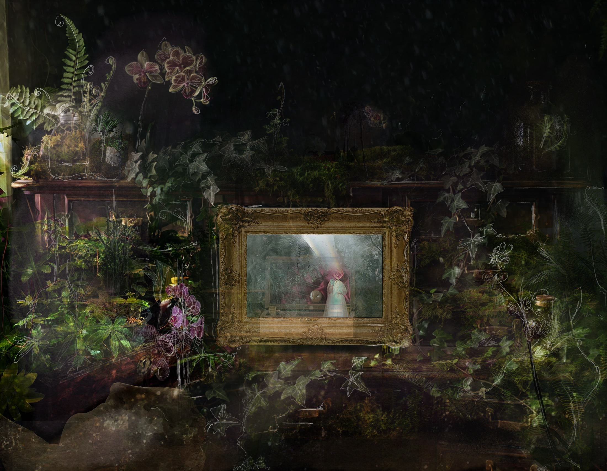

Poet · artist · practitioner-researcher

Scroll
I am a poet, artist and practitioner-researcher working across data humanism, participatory consultation, visual design and poetic practice. I design human-centred ways for organisations to communicate complex information, gather meaningful insight and make representation more accessible, situated and humane.
The mirror asks